When a laptop already runs Windows 11 Pro, a built-in reset is quicker than a USB reimage. I used this guide to move a group of laptops from another organisation's management into our Intune tenant, with the users doing most of the work themselves.
- Open Windows Update and install everything until it says no updates are available.
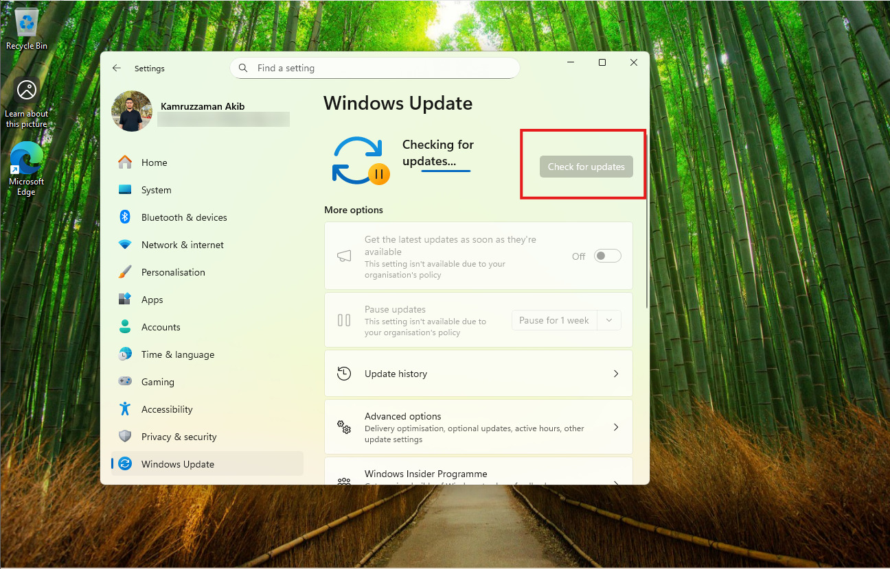
Install all pending updates first - Search for BitLocker and open Manage BitLocker.
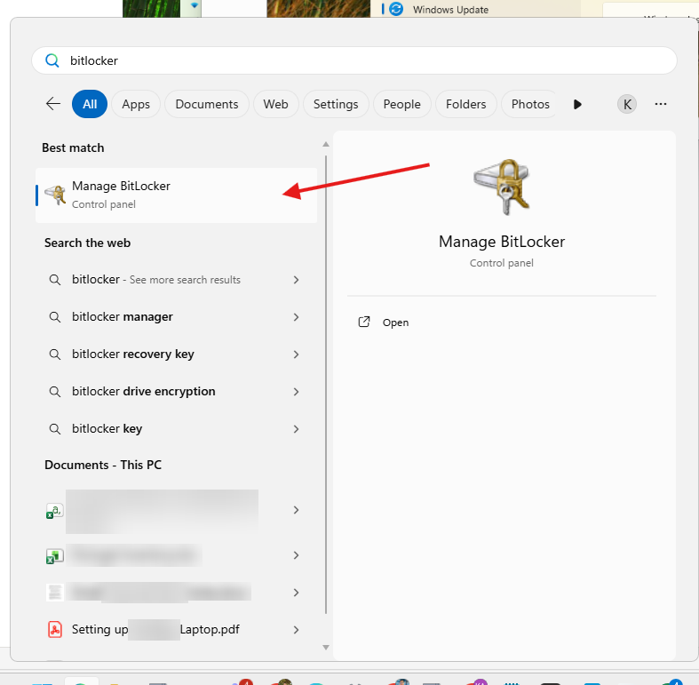
Open Manage BitLocker - Make sure BitLocker is off. If it's on, click Turn off BitLocker and wait until decryption is complete.
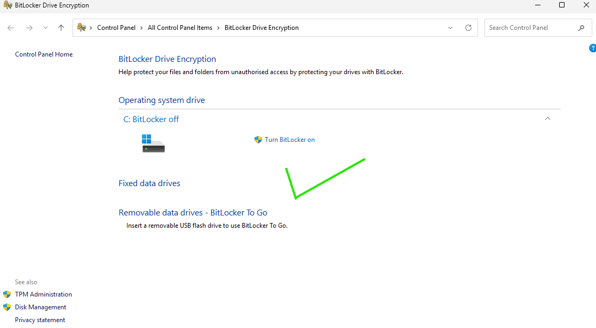
BitLocker is off - Go to Settings → System → Recovery.
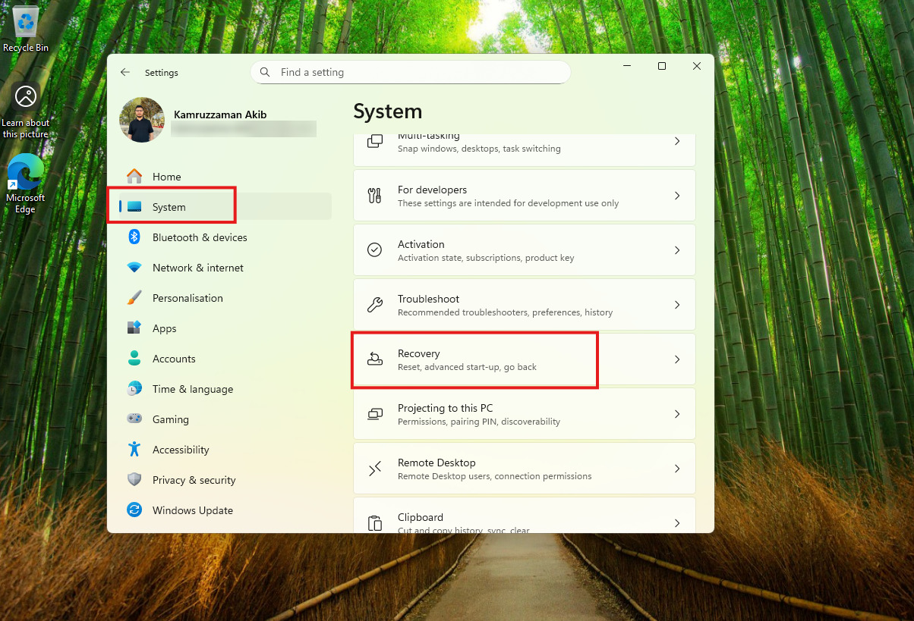
Settings → System → Recovery - Click Reset PC next to Reset this PC.
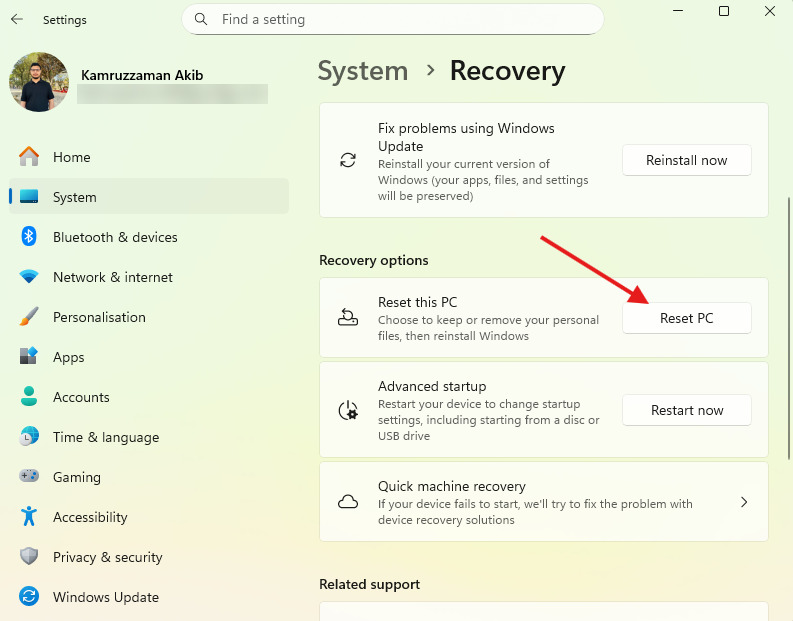
Reset PC - Choose Remove everything.
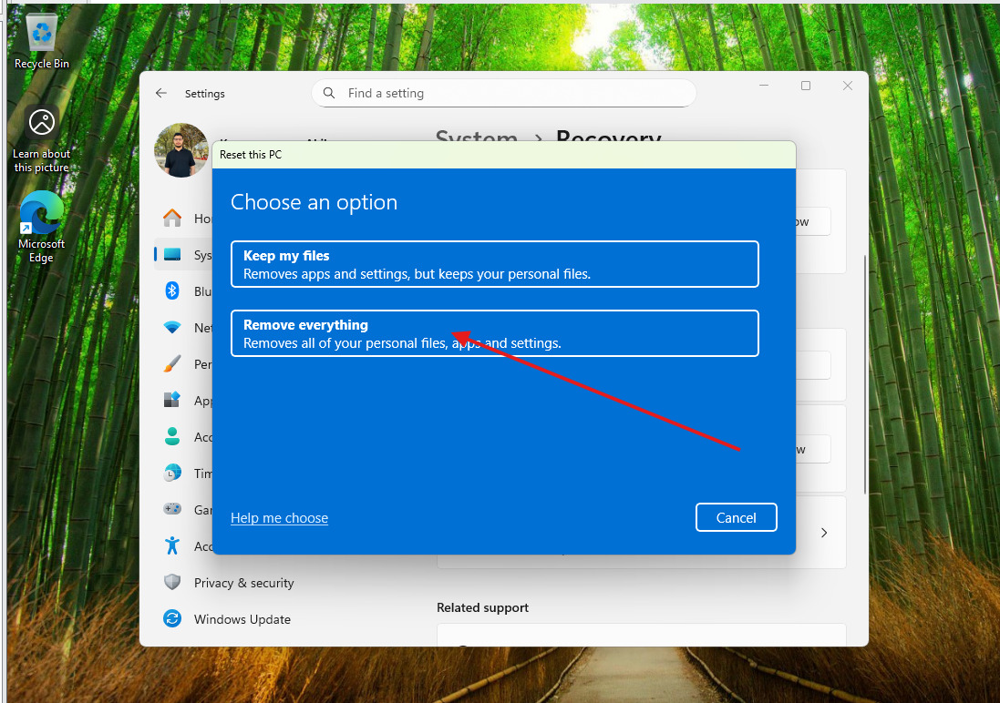
Remove everything - Choose Local reinstall.
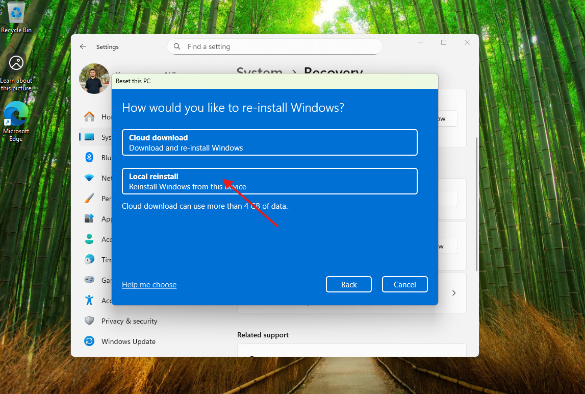
Local reinstall - Click Change settings.
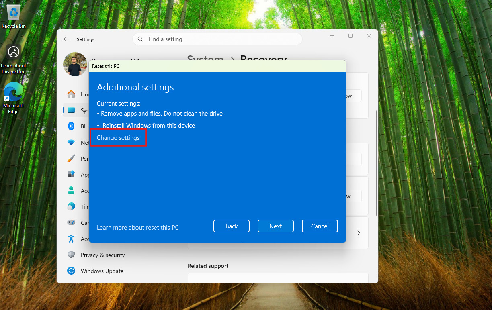
Change settings - Turn Clean data on (it should say Yes) and click Confirm. This wipes the drive properly so nothing from the previous owner can be recovered.
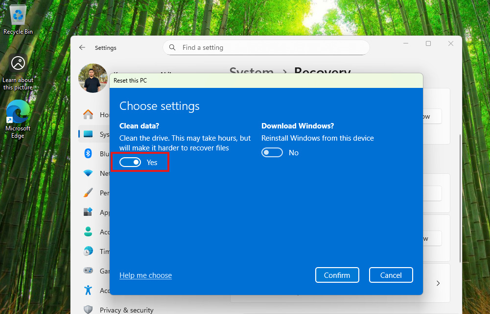
Clean data: Yes - Click Next, review the summary and click Reset.
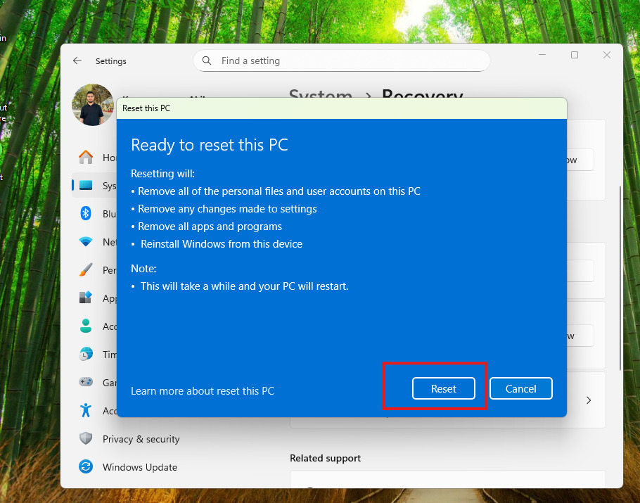
Ready to reset this PC - The reset starts. It can take about an hour and may appear stuck at 62% or 100%. That's normal; let it finish and restart.
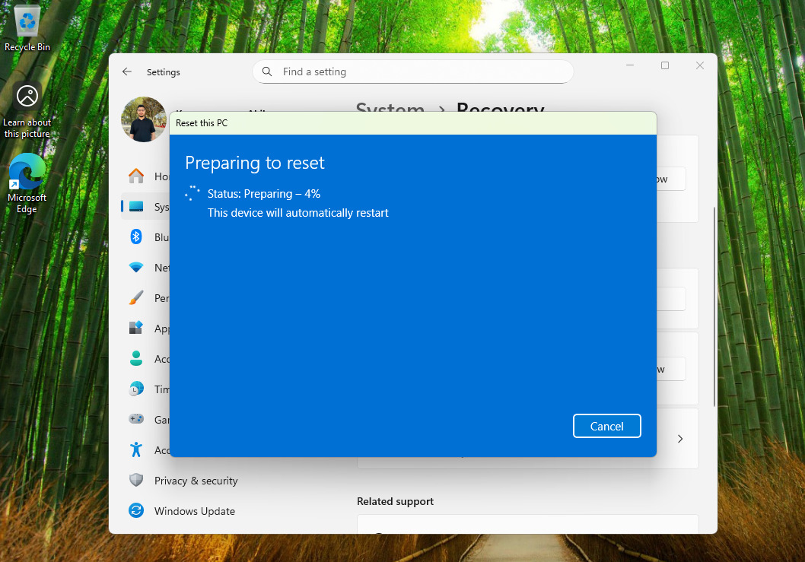
Preparing to reset - When Windows starts, connect to Wi-Fi and choose region and language.
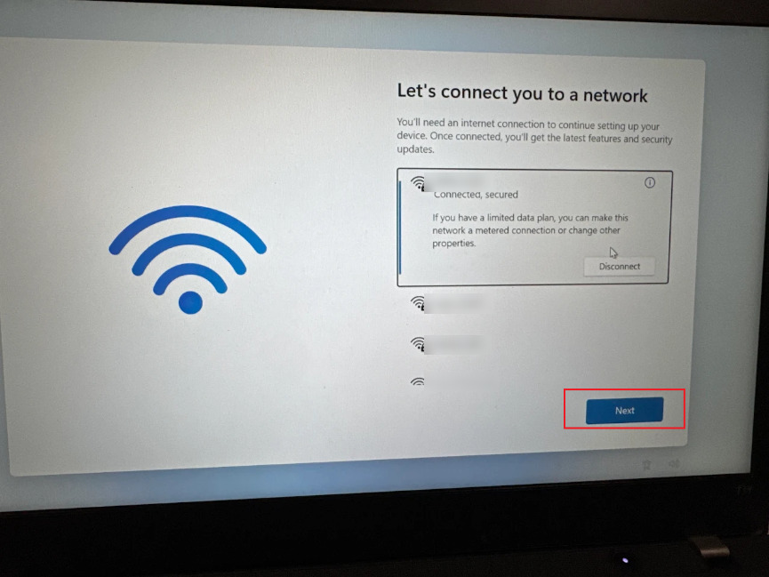
Connect to a network - Skip or set the device name.
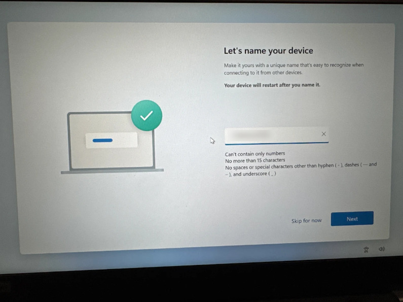
Device name (optional) - Choose Set up for work or school.
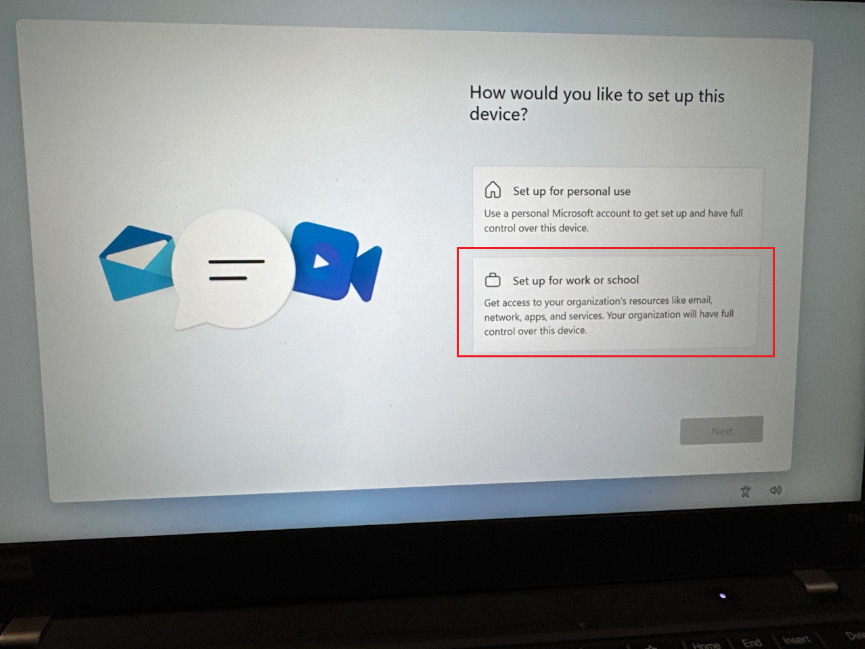
Set up for work or school - Sign in with your work account.
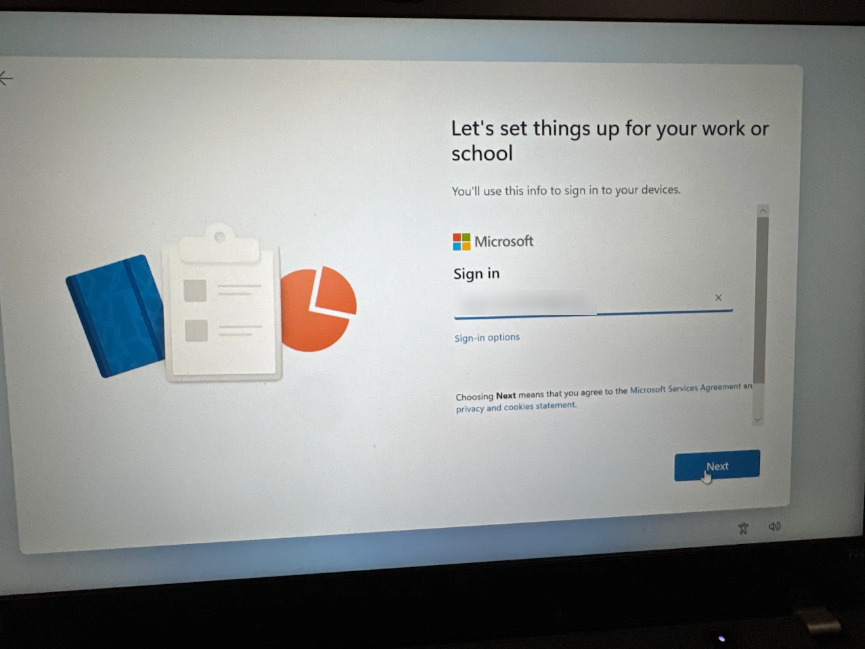
Sign in with the work account - You'll reach the desktop. Wait about 15 minutes for company apps and policies to sync, then restart and install any other tools you use from their official websites.
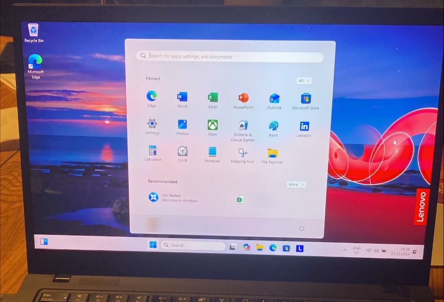
Enrolled and ready
If apps don't appear, force a sync from Settings → Accounts → Access work or school → Info → Sync (see Part 4 of the reimage guide).